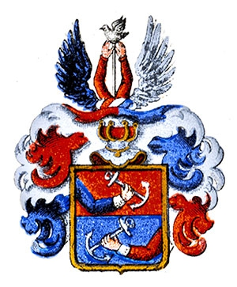

Assessor i Svea Hovrätt, Häradshövding m.m (se noteringar!). Blev högst 75 år.
1604 Enköping (C). [1]
Han adlades Berling nr 568. Då han inte födde några söner blev han den ende adlige personen Berling
1679 Bälinge (C). [1]
Olof Mårtensson Berling, adlad Berling, till Gesvaholm i Bälinge socken, Uppsala län. Född 1604 i Enköping, där fadern var rådman. Student i Uppsala 1624-03-00 (Um.), då han kallade sig Olaus Martini Encopiander. Auskultant i Svea hovrätt 1628-10-21. Underlagman i Uppland 1637-11-13–1668-00-00 (2). Assessor i Svea hovrätt 1640-04-09. Häradshövding i Olands härad 1651-11-15. Adlad 1652-05-11 (introducerad 1654 under nr 568). Häradshövding i Bälinge, Frösåkers, Åsunda och Simtuna härader 1653, i Frösåkers och Bälinge härader med Dannemora tingslag 1665-03-17 och i Torstuna, Simtuna och Ulleråkers härader 1671-12-08. Död 1679-01-07 utan söner och slöt själv sin ätt samt begraven i Bälinge kyrka, Uppland, där hans vapen uppsattes [Ash]. Gift med Sara Larsdotter, död 1677, bisatt i Jakobs kyrka, Stockholm 1677-03-08 och begraven bredvid mannen i Bälinge kyrka